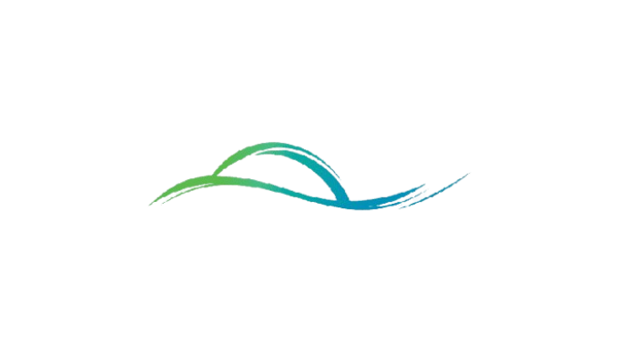

Kurikulum
Kurikulum
Kurikulum Di SMA Islam Al Azhar BSD, dalam jangka pendek bertujuan dalam Proses belajar yang manageable dan berkualitas, Pembentukan karakter berdasar Profil Pelajar Pancasila, Keahlian berfikir kreatif dan berfikir kritis, Penguasaan 6 literasi dasar (literasi baca dan tulis, literasi numerasi, literasi sains, literasi digital, literasi budaya kewarganegaraan dan literasi finansial). Pencapaian kompetensi pengetahuan dan keterampilan minimal tingkat SMA dan Karya tulis yang orisinil sehingga pada akhirnya menghasilkan lulusan yang mampu melanjutkan pendidikannya ke jenjang lebih tinggi pada lembaga akademik / vokasi / kedinasan terkemuka sesuai minat dan bakat yang dimilikinya.